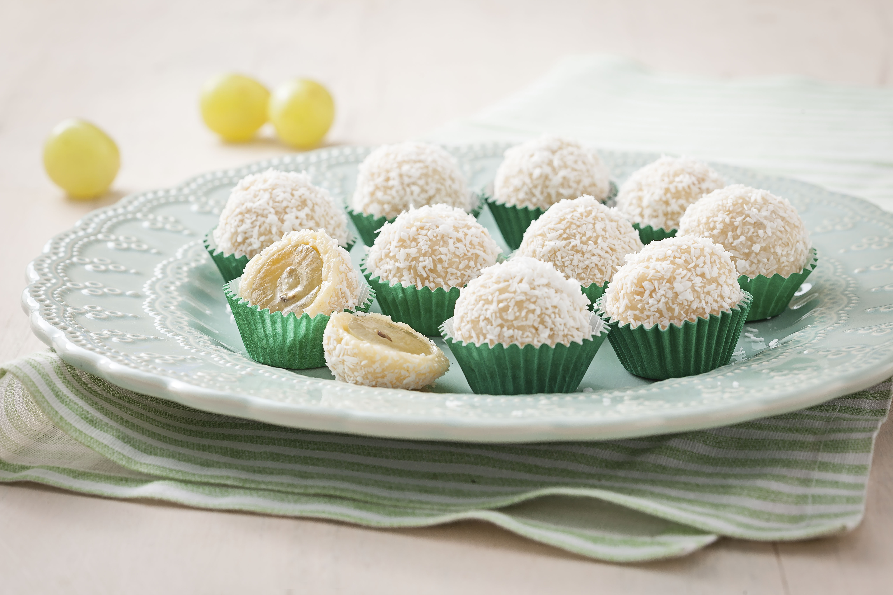
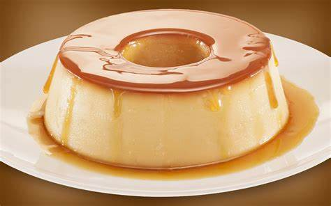

ℛ𝑒𝒸𝑒𝒾𝓉𝒶𝓈 𝒹𝑜 ℒ𝒶𝓃𝓏𝒶
Brigadeiro

Brigadeiro Tradicional
A originalidade do Brasil
.png)
Brigadeiro Choco
Delicia de colocar na boca
Brigadeiro com amendoim
Para quem gosta de amendoim
Previous
Next
Ninguém resiste a essa receita de brigadeiro: ele é o rei das festas de aniversário e é impossÃvel comer um só. Seja pra comemorar ou afogar as, mágoas no com uma panela de brigadeiro assistindo um filme triste, essa receita faz parte do dia a dia do brasileiro há décadas. Muito tradicional em nosso paÃs, o brigadeiro é muito fácil de preparar
ingredientes:
- Leite Condensado
- Margarina
- Achocolatado em pó
- Chocalate Granulado
Medida dos ingredientes
- 1 caixa de leite condensado
- 1 colher (sopa) de Margarina
- 7 colheres (sopa) de Achocolatado em pó
Como preparar
- Em uma panela funda, acrescente o leite condensado, a margarina e o chocolate em pó.
- Cozinhe em fogo médio e mexa até que o brigadeiro comece a desgrudar da panela.
- Deixe esfriar e faça pequenas bolas com a mão passando a massa no chocolate granulado.
Beijinho com uva

Ninguém resiste a essa receita debeijinho: ele é o rei das festas de aniversário e é impossÃvel comer um só. Seja pra comemorar ou afogar as, mágoas no com uma panela de beijinho assistindo um filme triste, essa receita faz parte do dia a dia do brasileiro há décadas. Muito tradicional em nosso paÃs, o beijinho é muito fácil de preparar
ingredientes:
- Leite Condensado
- Margarina
- Coco ralado
- cacho de uva
Como preparar
- Em uma panela misture o Leite MOÇA e a manteiga e leve ao fogo baixo, mexendo sempre até desprender do fundo da panela (cerca de 10 minutos).
- Retire do fogo, misture o coco, coloque em um prato untado com manteiga e deixe esfriar.
- Depois de frio, abra pequenas porções de massa com as mãos.
- Coloque uma uva no centro, feche as bordas e enrole.
- Passe pelo coco ralado e coloque em forminhas de papel.
Pudim

O pudim é uma das sobremesas mais simples e rápidas de fazer, com ingredientes simples que todos temos em casa. Para aproveitar ainda mais, experimente essa receita com leite condensado e surpreenda-se! Em suma, saiba como fazer pudim de leite condensado e aproveite!
ingredientes:
massa
- Leite Condensado
- 1 xicara de leite
- 4 ovos
calda
- 1 xicara de açúcar
- 1/3 xicara de água
| ingredientes |
Preço dos ingretientes |
link da compra |
total |
| leite |
R$4,79 |
compra |
| ovos |
R$14,99 |
compra |
| Leite condensado |
R$9,99 |
compra |
| Total |
|
|
R$29,77 |
Como preparar
- CALDA: Em uma panela, misture a água e o açúcar até formar uma calda. Unte uma forma com a calda e reserve.
- MASSA: Bata todos os ingredientes no liquidificador e despeje na forma caramelizada. Leve para assar em banho-maria por 40 minutos.
- Desenforme e sirva.